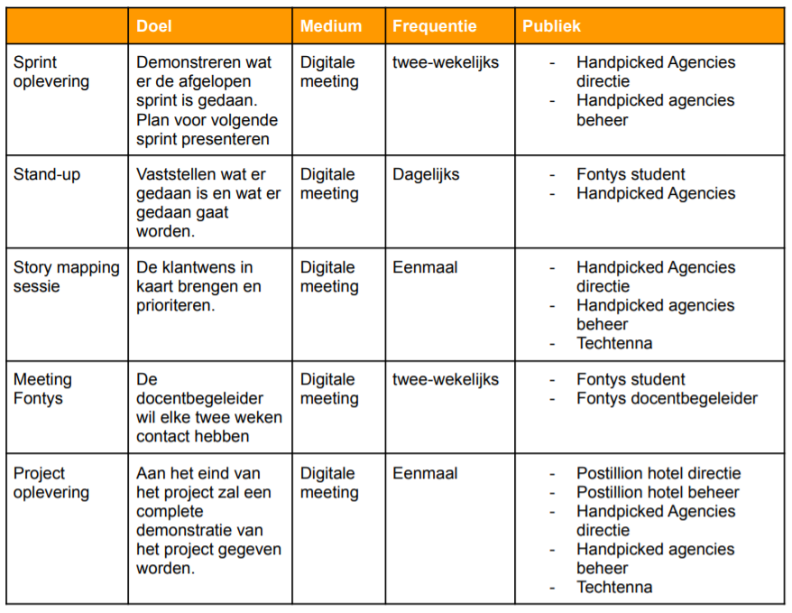
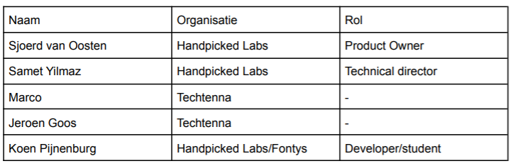
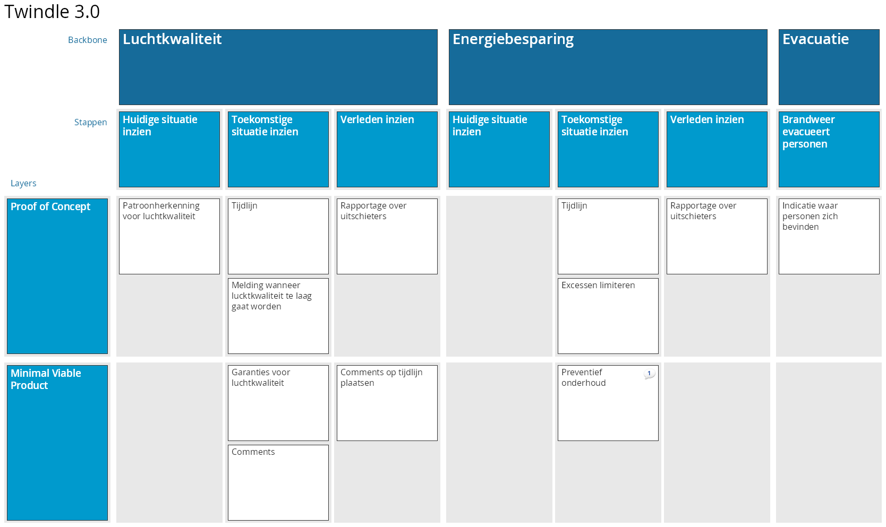
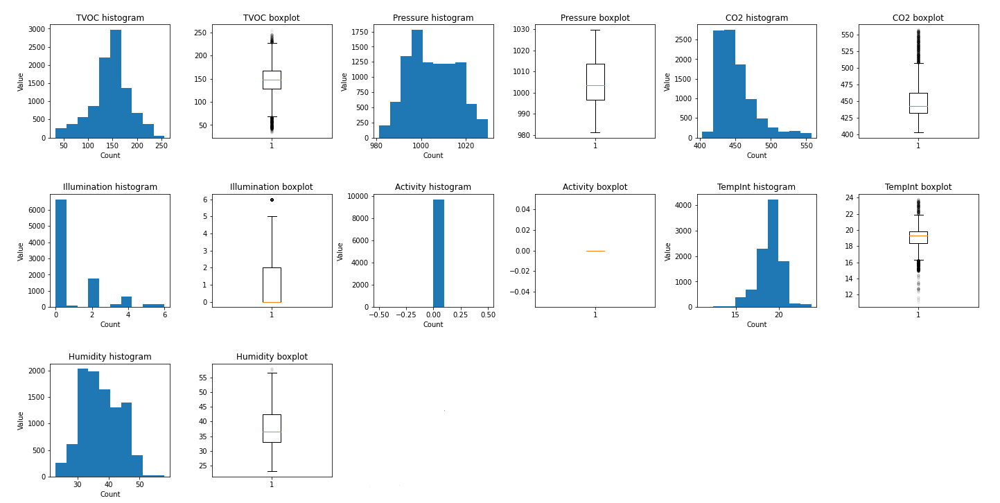
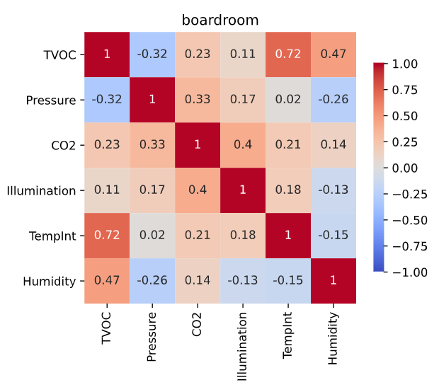
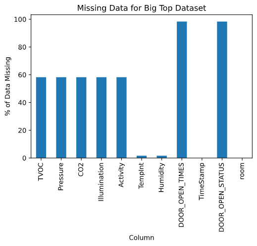

Analyseren
Stakeholders analyse
Om te bepalen welke partijen relevant waren voor het project was een stakeholders analyse uitgevoerd 1. De methodiek om de stakeholders analyse uit te voeren bestaat uit het identificeren- , prioriteren- en het begrijpen van deze groepen personen2.
Identificeren
Om de stakeholders te kunnen identificeren was een brainstormsessie gehouden. Het resultaat van deze sessie was een mindmap van alle personen of entiteiten die invloed hebben op het project. In de onderstaande afbeelding is deze mindmap te zien.

Prioriteren
Om te de communicatiemethoden te bepalen zijn de stakeholders geprioriteerd. Dit was gedaan door te kijken wat hun niveau van invloed is en hoeveel belang zij hadden bij het project. In het onderstaande “Stakeholder Power Interest Grid” wordt dit gevisualiseerd.

Begrijpen
De volgende stap was om, per stakeholder, te begrijpen wat hun relatie was tot het project. Dit was gedaan door per stakeholder categorie een aantal vragen te stellen en te beantwoorden 3. Gebaseerd op deze vragen is het onderstaande communicatieplan opgesteld.

Story mapping
Gedurende het project was een agile werkwijze worden gehanteerd. Een van de onderdelen hiervan is een product backlog waarin alle taken waren vastgelegd. De techniek die gebruikt is voor het opstellen van deze backlog is story mapping4. De voorbereiding en conclusie van deze story mapping sessie5 worden onderstaand toegelicht.
Voorbereiding
Aan de hand van het communicatie plan, zie afbeelding 3: Communicatie plan is een lijst met personen opgesteld die aanwezig moest zijn bij de story mapping sessie.

Personas waren toegepast om een duidelijker te krijgen bij de gebruikers van de applicatie. Uiteindelijk was vastgesteld dat er twee gebruikersgroepen binnen de applicatie waren 6. Hotelmanagers & consumers.
Resultaat
De story mapping sessie heeft plaatsgevonden op 02-03-2021. Om iedereen duidelijk te maken wat er verwacht werd was een korte presentatie gegeven. Daarna is de onderstaande story map opgesteld. Deze is gebruikt om via Trello een backlog op te stellen. 
Exploratory Data Analyse
De eerste stap om te kunnen bepalen welke machine learning modellen toegepast konden worden was het analyseren van de data die Twindle tot nu toe verzameld heeft. Hiervoor is een Exploratory Data Analyse7 (EDA) gemaakt volgens de methode van Sunil Ray8. Dit bestaat uit de volgende onderdelen:
- Variable identificatie
- Univariate analyse
- Multivariate analyse
- Missende gegevens
- uitschieters
Variable identificatie
De volgende gegevens, en hun datatype, waren aanwezig in de dataset. Een overzicht van de handelingen die gedaan waren om de onjuiste datatypes op te lossen kan gevonden worden in hoofdstuk 1.19.
TVOC float64 # 'Total volatile organic componds' in PPB
Pressure float64 # Luchtdruk in Pa.
CO2 float64 # CO2 concentratie in PPM.
Illumination float64 # Verlichtingsniveau in flux.
Activity float64 # 'Person in Room' (PIR)
TimeStamp datetime64[ns] # Datum en tijd van meting
TempInt float64 # Temperatuur in graden celsius
Humidity float64 # Luchtvochtigheidspercentage
DOOR_OPEN_STATUS float64 # Boolean of de deur open of dicht is.
DOOR_OPEN_TIMES float64 # Aantal keer dat de deur geopend is.
room object # Ruimte waarin de meting is vericht.
Univariate analyse
Univariate analyse is de eenvoudigste vorm van data analyse. Tijdens deze analyse werd elke variabele afzonderlijk geanalyseerd. Dit werd gedaan door de gegevens in histogrammen en boxplots te visualiseren. Hierdoor konden eventuele afwijkingen of uitschieters gedetecteerd worden.

In de bovenstaande afbeelding zijn de distributies van alle meetwaarden in de boardroom van de Big Top gevisualiseerd. Hierin valt te zien dat de meeste waarden een redelijk normale distributie hebben. Sommigen zoals bijvoorbeeld de CO2 waarden hebben afwijkingen en uitschieters. Tijdens de modellering fase is hier rekening mee gehouden.
Multivariate analyse
Tijdens dit soort data analyse zijn de verbanden tussen twee variabelen geanalyseerd. Dit is gedaan correlatiecoëfficiënt-heatmaps te maken. In afbeelding 7: Big Top's boardroom correlaties is een voorbeeld van deze correlatiecoëfficiënt-heatmaps te zien.

Hieruit kon opgemaakt worden dat er meerdere waarden zijn die redelijk sterk met elkaar gecorreleerd zijn. Bijvoorbeeld TVOC & temperatuur, dit zou een indicatie kunnen zijn dat wanneer de temperatuur stijgt de TVOC waarde meestijgt. Om dit te kunnen uitsluiten zal per meetwaarden verder onderzoek verricht moeten worden.
Missende gegevens
In de onderstaande afbeelding is het percentage van de data wat mist gevisualiseerd. Het is opvallend dat de missende data in clusters opgedeeld kan worden, namelijk:
- TVOC, Pressure, CO2, Illumunation, Activity
- TempInt, Humidity
- DOOR_OPEN_TIMES, DOOR_OPEN_STATUS

Na de applicatie beter te bekijken is bevonden dat er per ruimte andere gegevens worden bijgehouden. Hierdoor is de clustervorming van de missende gegevens te verklaren.
Uitschieters
Tijdens de univariate analyse is gebleken dat sommige meetwaarden veel uitschieters bevatten. Om deze op te lossen is de onderstaande "interquartile range outlier removal" methode gebruikt
def iqr_outlier_removal(df, scale=1.5):
"""Removes outliers based on the interquartile range method."""
# Calculate 1st and 3rd quantile and the range between them (iqr)
q1 = df.quantile(0.25)
q3 = df.quantile(0.75)
iqr = q3 - q1
# Calculate the upper- and lower boundries
lower = q1 - scale * iqr
upper = q3 + scale * iqr
# Filter out non numeric data
non_numeric = df.select_dtypes(exclude=np.number).columns.values
df_in = df.select_dtypes(np.number)
# Filter dataframe based on upper- and lower boundries
df_out = df_in[~((df_in < lower) | (df_in > upper)).any(axis=1)]
print(f'Removed {df_in.shape[0] - df_out.shape[0]} outliers.')
# Rejoin non numeric data and return resulting dataframe
return df_out.join(df[non_numeric])
Wanneer deze methode wordt gebruikt op de datasets verwijderd het ongeveer 20% van de data. Het kan zijn dat dit teveel is en dat er niet meer genoeg data over is om effectieve modellen van te maken. In dit geval kan de scale parameter worden aangepast zodat er minder data als uitschieter wordt gezien.
Bevindingen
Deze Exploratory Data Analyse is uitgevoerd om te kijken hoe de data die door de Twindle applicatie verzameld werd in elkaar zit. De volgende bevindingen zijn gemaakt:
- De gegevens bevatten grote uitschieters.
- Niet voor elke kamer worden dezelfde gegevens verzameld.
- De gegevens zijn erg scheef, wat onnauwkeurigheden kan veroorzaken bij gebruik in regressie-algoritmen.
- Er is een gebrek aan sterk gecorreleerde features.
- De methode voor het verwijderen van uitschieters verwijdert ongeveer ~ 20% van de gegevens; de
scaleparameter kan worden aangepast om dit te verlagen.
Op basis van deze bevindingen kunnen de data requirements worden onderzocht.
Requirements
vanuit de voorgaande analyses zijn requirements opgesteld. Deze vallen in de volgende drie categorieen:
- Software
- Data
- Machine learning
Software requirements
Gebaseerd op het resultaat van de story mapping sessie zijn de volgende requirements opgesteld voor het software product. Deze zijn geprioriteerd door middel van de MosCoW10 methode.
| ID | Beschrijving | Prioritijd |
|---|---|---|
| 1. | Tijdlijn waarop de toekomstige- en verleden meldingen te zien zijn. | Must |
| 2. | Meldingen wanneer luchtkwaliteit te laag dreigt te worden. | Must |
| 3. | Comments plaatsen op de tijdlijn. | Must |
| 4. | Uitschieters rapportage. | Could |
| 5. | Energiebesparing voorspellen om exessen te voorkomen. | Could |
| 6. | Preventief onderhoud voorspellen*. | Won't |
| 7. | Indicatie waar personen zich bevinden*. | Won't |
De kern van het systeem zal zijn dat er meldingen gemaakt kunnen worden wanneer de luchtkwaliteit in gevaar is. Hiervoor zal een tijdlijn aan de bestaande applicatie worden toegevoegd om deze meldingen inzichtbaar te maken.
*In het resultaat van de storymapping staat beschreven dat requirement #7 bij het proof of concept hoort. Later is besloten om de scope in te perken tot luchtkwaliteit voorspellingen.
Data requirements
Om te bepalen of aan de luchtkwaliteitseisen wordt voldaan is een overzicht samengesteld met minima en maxima opgesteld, zie tabel 1: minima & maxima waarden. Om deze waarden effectief te kunnen voorspellen zal extra data verzameld moeten worden, per meetwaarde is dit onderzocht11.
| Meetwaarde | Min (waarschuwing) | Max (waarschuwing) | Min (gevaar) | Max (gevaar) |
|---|---|---|---|---|
| Temperatuur | 17 | 22,5 | 16,5 | 23,5 |
| Luchtvochtigheid | 40 | 60 | 30 | 70 |
| CO2 | 400 | 800 | 300 | 1200 |
| TVOC | -1 | 200 | -1 | 250 |
Uit dit onderzoek is de volgende lijst met te verzamelen data gekomen:
Gebouw
- Oppervlakte van de ruimten
- Bouwjaar
- Verwarming/airconditioning instellingen
- Raamstand
Weer
- Buitentemperatuur
- Luchtvochtigheid
- Zonnestraling
Machine learning requirements
Vanuit de product owner is het doel gesteld dat de modellen tenminste 90% accuraat moeten zijn. De meetwaarden die gemodelleerd dienen te worden zijn continu en niet uit te drukken in procent accuracy. R-squared score kan gebruikt worden voor dit soort modellen. Het geeft een waarde tussen 0.0 en 1.0 aan wat geïnterpreteerd kan worden als een percentage. Wanneer een R2 Score van 0.90 wordt behaald zal het model aan de eisen voldoen.
Om de modellen onderling met elkaar te vergelijken zal, naast r-squared, ook de root mean squared error scoring methode worden gebruikt. Deze methode resulteert in een waarde in dezelfde eenheid als het target. Hierdoor kan gezien worden in hoeverre de gemiddelde voorspelling zal afwijkt van de realiteit.